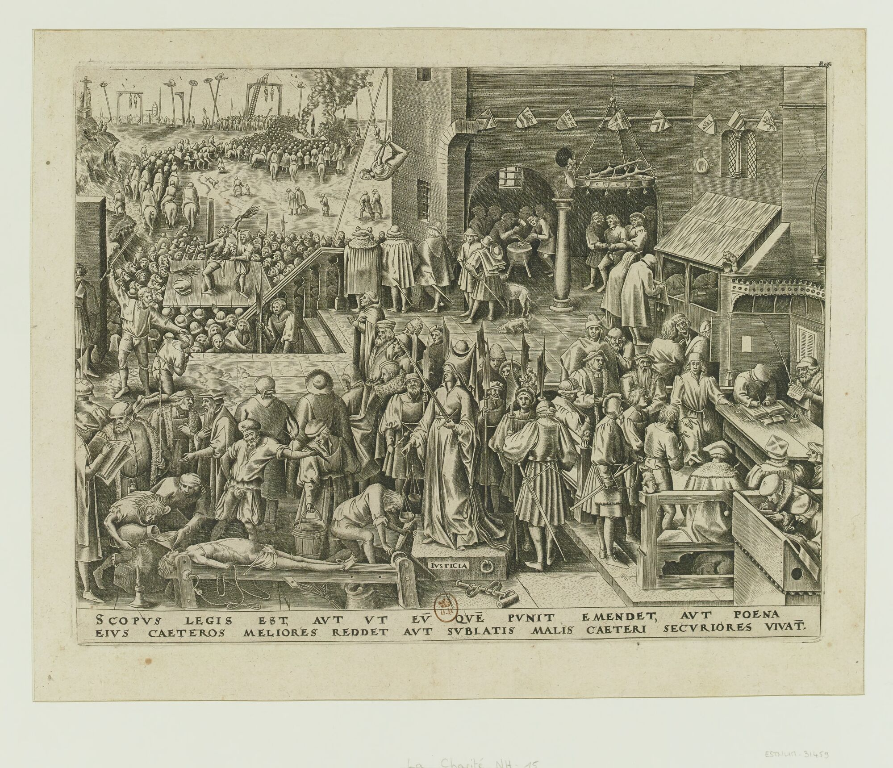

BE · 1559
Iustitia · gravura.
Regime normativo
Iustitia
Descrição
Leitura iconológica em preparação para esta peça. Registre suas observações abaixo — elas ficam salvas neste navegador.
Suas notas · salvas localmente
Iconometria
Esta peça ainda não foi pontuada nos dez indicadores. A codificação iconométrica acontece no Atlas Lab.
- desincorporação
- rigidez postural
- dessexualização
- uniformização facial
- heraldicização
- enquadramento arq.
- apagamento narrativo
- monocromatização
- serialidade
- inscrição estatal
ObraIustitia
IdentificadorBE-1559-01
NaçãoBélgica
Datação1559
Suportegravura
ClassificaçãoRegime normativo
DomínioImagem de domínio público
Mesma família · por regime e nação